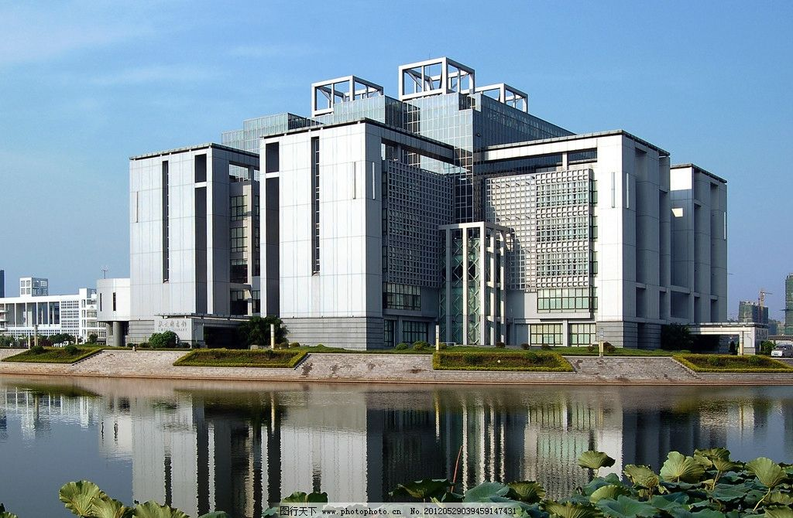
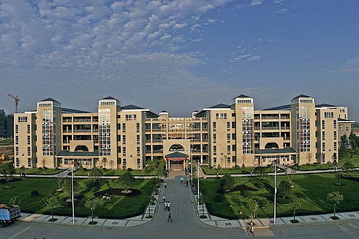

使用除360以外的浏览器可能导致出现图片不对齐的情况
 
在当天刚开始接到这个任务时，我们是茫然的。因为目前所学知识的巨大的局限性，我们对这次任务感到悲观。但随着时间的流逝以及其他科目作业的繁忙，我们选择了硬着头皮上。首先在网上到处查找资料，经过一段时间的讨论后，我们选择了网站，因为APP的难度过大。确定目标后便开始了一边学习，一边动手的过程。首先使用注册了github,然后Git Bash安装本地环境，再者安装nodejs。在以上准备后便开始了hexo的安装以及网站的部署。其中最令人感觉神奇与奇怪的莫过于对一堆没见过的文件的各种操作以及对系统命令（cmd）界面操作的简要学习。在经过长达一整天的不懈努力后终于完成了网站的初步搭建。
由于需要对页面结构进行设计，我们花了一天半时间学习了HTML语言（虽然不是很难，但对记忆力要求很大，其中的超链接真的令人感到很有趣）。之后就是对内容进行设计。在一段较长的部署后也便有了如今的样子（的确很简陋，但很有意义）。
由于web知识的缺乏，我们对只能完成现在这样的布局与结构表达歉意。
最后，感谢谭震宇同学能在项目繁忙时独自承担了论文的书写以及对资料的查找。感谢彭宽同学对项目的持续关注与用心以及为了防止我们最后没能完成而准备网站（通过可以直接设计网站的网站制作的）。感谢潘志伟同学从零开始对网站建设和对网页设计的贡献与不懈努力以及对各种资料进行查找与运用。 ---------423团队（谭震宇，彭宽，潘志伟）